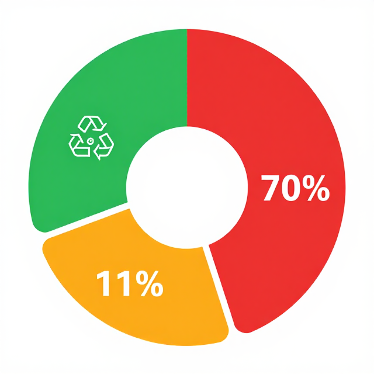

回收不是答案
重新想像我們與垃圾的關係
6.7 永續廢棄物處理實踐｜國中版（13–15 歲）
起點
你覺得哪個最環保？
選項 A
♻️
把寶特瓶丟進回收桶
選項 B
🧴
自備水壺完全不買寶特瓶
選項 C
🌺
把寶特瓶洗乾淨做花瓶
答案是 B——那才是「預防」，五層中的第一層。
活動一
為什麼回收排最後？
挑戰你對「環保」的直覺排序
活動一・步驟 2
廢棄物處理優先順序
① 預防／避免根本不產生最好
② 再使用準備押金瓶、二手衣
③ 回收仍需能源、有純度損失
④ 能源回收（焚化）仍排 CO₂、有飛灰
⑤ 最終處置（掩埋）最差，甲烷排放
歐盟法律（2008/98/EC）確立，回收排第三——不是第一！
活動一・步驟 2
全球 100 件垃圾的真實去向
全球廢棄物流向圓餅圖
世界連線圖與教學標記

全球 100 件垃圾的真實去向
活動二
數據解讀 × 文化診斷
從臺灣數據看見拋棄式文化的根源
活動二・步驟 1
臺灣的成績單：進步了，但還不夠
臺灣人均垃圾清運量趨勢線圖
趨勢圖
臺灣的成績單：進步了，但還不夠
資料來源：中華民國環境部
活動二・步驟 2
一次性手搖杯的惡性循環
方便
→
消費依賴
→
產業擴張
→
垃圾增加
→
回收壓力
→
（回到）方便文化
槓桿點在哪裡？從「方便」這個節點下手——押金制飲料杯、自備杯折扣，讓「不買一次性」比「買」更方便。
小組任務：畫出你們班最常見的一次性物品因果迴路圖，找出 1 個可以介入的槓桿點。
活動二・步驟 3
5R / 6R 優先順序：前三項才是真正永續
- ①Refuse 拒用— 對不必要的消費說不，例如拒收一次性吸管
- ②Reduce 減量— 少買、少用，例如雙面列印、縮短淋浴時間
- ③Reuse 重複使用— 同一物品多次使用，例如自備水壺、布袋
- ④Repair 維修— 壞了修，延長壽命
- ⑤Recycle 回收— 前四項都做不到時才回收
- ⑥Recovery 再生利用— 最後手段，焚化發電
前 3 = 源頭（最優先）｜後 3 = 後端處理（最後手段）
活動三
社區回收場田野研究
從回收阿姨的視角，看見源頭的問題
活動三・步驟 3
Repair Café 修理咖啡館
維修站任務
- 帶來家中壞掉的小物
- 同學互助維修或重新利用
- 填寫維修紀錄表
維修紀錄表
- 物品名稱與損壞情形
- 修復方法
- 預計延長使用年限
- 若不修理，會變成哪類垃圾？
全球 Repair Café 運動已在 35 個國家設立超過 2,000 個據點——維修是文化，不是妥協。
活動四
學生治理 × WSA 行動日
從教室走向校園制度改變
活動四・步驟 1
若不行動：2050 年全球垃圾幾乎翻倍
2020 年
21.3
億噸城市固體廢棄物／年
2050 年（若不改變）
38.8
億噸城市固體廢棄物／年
若實施零廢棄加循環經濟路徑，每年可省下超過 一兆美元 社會成本。
活動四・步驟 2 ・ 學習單（投影版）
個人承諾卡：這週我要「拒用」一項
我要挑戰拒用的是：
具體做法是：
執行時間/地點：
若成功，我要告訴：
承諾人：
見證夥伴：
總結
三個關鍵字，重新定義「環保」
第 1 個
拒用
Refuse 排第一
最環保的垃圾是沒出現的垃圾
最環保的垃圾是沒出現的垃圾
第 2 個
系統
廢棄物是設計問題
不只是個人行為問題
不只是個人行為問題
第 3 個
治理
從自己做到提案
讓制度支持永續選擇
讓制度支持永續選擇
回收是保險，不是環保的終點。你的第一步是：拒用。